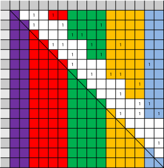
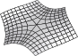

Ulrich Bauer
I am an associate professor (W3) in the department of mathematics at the Technical University of Munich (TUM), leading the Applied & Computational Topology group. My research revolves around application-motivated concepts and computational methods in topology and geometry, popularized by application areas such as topological data analysis. Some of my key research areas are persistent homology, discrete Morse theory, and geometric complexes. My research is supported by funding from DFG (Collaborative Research Center Discretization in Geometry and Dynamics) and MDSI (Munich Data Science Institute).
I am the author of Ripser, a leading software for the computation of Vietoris–Rips persistence barcodes.
I am an editor of the Journal of Applied and Computational Topology and the SIAM Journal on Applied Algebra and Geometry. I serve on the executive board of the DFG Collaborative Research Center Discretization in Geometry & Dynamics, and on the advisory board of the EPSRC Centre for Topological Data Analysis. I am a core member of the MDSI (Munich Data Science Institute) and a principal investigator of the MCML (Munich Center for Machine Learning)
I obtained my PhD with Max Wardetzky in the research group Discrete Differential Geometry at the University of Göttingen, and worked a postdoc in Herbert Edelsbrunner's research group at IST Austria.
I am currently advising and mentoring the graduate students and postdocs
Benedikt Fluhr,
Håvard B. Bjerkevik,
David Hien (jointly with Oliver Junge),
Fabian Lenzen,
Fabian Roll,
Alexander Rolle,
Matthias Söls.
and
Nico Stucki.
My former students and postdocs include
Magnus B. Botnan,
Florian Pausinger,
Érika Roldán Roa,
Abhishek Rathod,
and
Maximilian Schmahl.
Contact:
| |
Prof. Dr. Ulrich Bauer Applied and Computational Topology Department of Mathematics Technical University of Munich Boltzmannstraße 3 D-85747 Garching bei München |
Vox: +49 89 289 18361 Net: mail (at) ulrich-bauer.org |
Software
|
|
Ripser: a lean C++ code for the computation of Vietoris–Rips persistence barcodes
Ulrich Bauer (2015–2021). Licensed under MIT license. Description: Ripser is a lean C++ code for the computation of Vietoris–Rips persistence barcodes. It can do just this one thing, but does it extremely well. The implementation is based on an implicit algorithmic representation of the coboundary operator and of the filtration order, avoiding the explicit construction of the filtration boundary matrix. Our software shows significant improvements over existing software both in time and memory usage. The source code consists of around 1000 lines of C++ code. It supports for coefficients in prime finite fields and sparse distance matrices for computing the Vietoris–Rips persistence barcodes only up to a specified threshold. No external dependencies are required.
To see a live demo of Ripser's capabilities, go to live.ripser.org. The computation happens inside the browser (using PNaCl on Chrome and JavaScript via Emscripten on other browsers).
|

|
PHAT (Persistent Homology Algorithm Toolbox) Ulrich Bauer, Michael Kerber, Jan Reininghaus. Copyright IST Austria (2013–2017). Licensed under LGPL. Description: PHAT is an open-source C++ library for the computation of persistent homology by matrix reduction, targeted towards developers of software for topological data analysis. We aim for a simple generic design that decouples algorithms from data structures without sacrificing efficiency or user-friendliness. PHAT provides numerous different reduction strategies as well as data types to store and manipulate the boundary matrix. [bitbucket] |
Selected Publications [all publications]
|
|
The Reeb Graph Edit Distance is Universal
Ulrich Bauer, Claudia Landi, and Facundo Mémoli. Foundations of Computational Mathematics 21 (2021), 1441–1464. Abstract: We consider the setting of Reeb graphs of piecewise linear functions and study distances between them that are stable, meaning that functions which are similar in the supremum norm ought to have similar Reeb graphs. We define an edit distance for Reeb graphs and prove that it is stable and universal, meaning that it provides an upper bound to any other stable distance. In contrast, via a specific construction, we show that the interleaving distance and the functional distortion distance on Reeb graphs are not universal. [arXiv] |
|
|
Ripser: a lean C++ code for the computation of Vietoris–Rips persistence barcodes
Ulrich Bauer. Journal of Applied and Computational Topology 5 (2021), 391–423. Abstract: We present an algorithm for the computation of Vietoris–Rips persistence barcodes and describe its implementation in the software Ripser. The method relies on implicit representations of the coboundary operator and the filtration order of the simplices, avoiding the explicit construction and storage of the filtration coboundary matrix. Moreover, it makes use of apparent pairs, a simple but powerful method for constructing a discrete gradient field from a total order on the simplices of a simplicial complex, which is also of independent interest. Our implementation shows substantial improvements over previous software both in time and memory usage. [doi] [arxiv] |

|
Cotorsion torsion triples and the representation theory of filtered hierarchical clustering
Ulrich Bauer, Magnus B Botnan, Steffen Oppermann, Johan Steen. Advances in Mathematics 369 (2020), 67–96. Abstract: We give a full classification of representation types of the subcategories of representations of an m×n rectangular grid with monomorphisms (dually, epimorphisms) in one or both directions, which appear naturally in the context of clustering as two-parameter persistent homology in degree zero. We show that these subcategories are equivalent to the category of all representations of a smaller grid, modulo a finite number of indecomposables. This equivalence is constructed from a certain cotorsion torsion triple, which is obtained from a tilting subcategory generated by said indecomposables. [doi] [arXiv] |
|
|
Persistence Diagrams as Diagrams: A Categorification of the Stability Theorem
Ulrich Bauer and Michael Lesnick. Topological Data Analysis. Abel Symposia, vol 15. Springer (2020), 67–96. Abstract: Persistent homology, a central tool of topological data analysis, provides invariants of data called barcodes (also known as persistence diagrams). A barcode is simply a multiset of real intervals. Recent work of Edelsbrunner, Jablonski, and Mrozek suggests an equivalent description of barcodes as functors R-> Mch, where R is the poset category of real numbers and Mch is the category whose objects are sets and whose morphisms are matchings (ie, partial injective functions). Such functors form a category Mch^ R whose morphisms are the natural transformations. Thus, this interpretation of barcodes gives us a hitherto unstudied categorical structure on barcodes. The aim of this note is to show that this categorical structure leads to surprisingly simple reformulations of both the well-known stability theorem for persistent homology and a recent generalization called the induced matching theorem. [arXiv] |
|
|
Hardness of Approximation for Morse Matching
Ulrich Bauer and Abhishek Rathod. SODA '19: Proceedings of the 30th ACM-SIAM Symposium on Discrete Algorithms (2019), 2663-2774. Abstract: We consider the approximability of maximization and minimization variants of the Morse matching problem, posed as open problems by Joswig and Pfetsch. We establish hardness results for Max-Morse matching and Min-Morse matching. In particular, we show that, for a simplicial complex with n simplices and dimension $ d\leq 3$, it is NP-hard to approximate Min-Morse matching within a factor of $ O (n^{1-\epsilon}) $, for any $\epsilon> 0$. Moreover, using an L-reduction from Degree 3 Max-Acyclic Subgraph to Max-Morse matching, we show that it is both NP-hard and UGC-hard to approximate Max-Morse matching for simplicial complexes of dimension $ d\leq 2$ within certain explicit constant factors. [doi] [arXiv] |
|
|
The Morse theory of Čech and Delaunay complexes
Ulrich Bauer and Herbert Edelsbrunner. Transactions of the American Mathematical Society 369:5 (2017), 3741–3762. Conference version: The Morse theory of Čech and Delaunay filtrations, SoCG '14 Proceedings of the twenty-ninth annual symposium on Computational geometry (2014), 484–490. [pdf] [doi] Abstract: Given a finite set of points in ℝⁿ and a positive radius, we consider the Čech, Delaunay–Čech, alpha, and wrap complexes as examples of a generalized discrete Morse theory. We prove that the latter three are simple-homotopy equivalent, and the same is true for their weighted versions. Our results have applications in topological data analysis and in the reconstruction of shapes from sampled data. [doi] [arXiv] |
|
|
Persistence Barcodes Versus Kolmogorov Signatures: Detecting Modes of One-Dimensional Signals
Ulrich Bauer, Axel Munk, Hannes Sieling, and Max Wardetzky. Foundations of Computational Mathematics 17:1 (2017), 1–33. Abstract: We investigate the problem of estimating the number of modes (i.e., local maxima)—a well-known question in statistical inference—and we show how to do so without presmoothing the data. To this end, we modify the ideas of persistence barcodes by first relating persistence values in dimension one to distances (with respect to the supremum norm) to the sets of functions with a given number of modes, and subsequently working with norms different from the supremum norm. As a particular case, we investigate the Kolmogorov norm. We argue that this modification has certain statistical advantages. We offer confidence bands for the attendant Kolmogorov signatures, thereby allowing for the selection of relevant signatures with a statistically controllable error. As a result of independent interest, we show that taut strings minimize the number of critical points for a very general class of functions. We illustrate our results by several numerical examples. [doi] [arXiv] |
|
|
PHAT–Persistent homology algorithms toolbox
Ulrich Bauer, Michael Kerber, Jan Reininghaus, Hubert Wagner. Journal of Symbolic Computation 78 (2017), 76–90. Conference version: ICMS 2014: Mathematical Software – ICMS 2014, 137–143. [doi] Abstract: Phat is an open-source C++ library for the computation of persistent homology by matrix reduction, targeted towards developers of software for topological data analysis. We aim for a simple generic design that decouples algorithms from data structures without sacrificing efficiency or user-friendliness. We provide numerous different reduction strategies as well as data types to store and manipulate the boundary matrix. We compare the different combinations through extensive experimental evaluation and identify optimization techniques that work well in practical situations. We also compare our software with various other publicly available libraries for persistent homology. [doi] |
|
|
Induced Matchings and the Algebraic Stability of Persistence Barcodes
Ulrich Bauer and Michael Lesnick. Journal of Computational Geometry 6:2 (2015), 162–191 (Invited to special issue for best papers of SoCG '14). [pdf] [doi] Conference version: Induced Matchings of Barcodes and the Algebraic Stability of Persistence, SoCG '14 Proceedings of the twenty-ninth annual symposium on Computational geometry (2014), 355–364. Abstract: We define a simple, explicit map sending a morphism f: M → N of pointwise finite dimensional persistence modules to a matching between the barcodes of M and N. Our main result is that, in a precise sense, the quality of this matching is tightly controlled by the lengths of the longest intervals in the barcodes of ker f and coker f. As an immediate corollary, we obtain a new proof of the algebraic stability of persistence, a fundamental result in the theory of persistent homology. In contrast to previous proofs, ours shows explicitly how a δ-interleaving morphism between two persistence modules induces a δ-matching between the barcodes of the two modules. Our main result also specializes to a structure theorem for submodules and quotients of persistence modules. [doi] [arXiv] |
|
|
A stable multi-scale kernel for topological machine learning Jan Reininghaus, Stefan Huber, Ulrich Bauer, and Roland Kwitt. CVPR'15 Proceedings of the IEEE conference on computer vision and pattern recognition (2015), 4741-4748. Abstract: Topological data analysis offers a rich source of valuable information to study vision problems. Yet, so far we lack a theoretically sound connection to popular kernelbased learning techniques, such as kernel SVMs or kernel PCA. In this work, we establish such a connection by designing a multi-scale kernel for persistence diagrams, a stable summary representation of topological features in data. We show that this kernel is positive definite and prove its stability with respect to the 1-Wasserstein distance. Experiments on two benchmark datasets for 3D shape classification/retrieval and texture recognition show considerable performance gains of the proposed method compared to an alternative approach that is based on the recently introduced persistence landscapes. [pdf] |
|
|
Measuring Distance between Reeb Graphs Ulrich Bauer, Xiaoyin Ge, and Yusu Wang. SoCG '14 Proceedings of the twenty-ninth annual symposium on Computational geometry (2014), 464–473. Abstract: We propose a metric for Reeb graphs, called the functional distortion distance. Under this distance measure, the Reeb graph is stable against small changes of input functions. At the same time, it remains discriminative at differentiating input functions. In particular, the main result is that the functional distortion distance between two Reeb graphs is bounded from below by (and thus more discriminative than) the bottleneck distance between both the ordinary and extended persistence diagrams for appropriate dimensions. As an application of our results, we analyze a natural simplification scheme for Reeb graphs, and show that persistent features in Reeb graph remains persistent under simplification. Understanding the stability of important features of the Reeb graph under simplification is an interesting problem on its own right, and critical to the practical usage of Reeb graphs. [pdf] [doi] [arXiv] |
|

|
Clear and Compress: Computing Persistent Homology in Chunks Ulrich Bauer, Michael Kerber, and Jan Reininghaus, Topological Methods in Data Analysis and Visualization III Mathematics and Visualization 2014, 103–117. Abstract: We present a parallelizable algorithm for computing the persistent homology of a filtered chain complex. Our approach differs from the commonly used reduction algorithm by first computing persistence pairs within local chunks, then simplifying the unpaired columns, and finally applying standard reduction on the simplified matrix. The approach generalizes a technique by Günther et al., which uses discrete Morse Theory to compute persistence; we derive the same worst-case complexity bound in a more general context. The algorithm employs several practical optimization techniques which are of independent interest. Our sequential implementation of the algorithm is competitive with state-of-the-art methods, and we improve the performance through parallelized computation. [doi] [arXiv] |
|
|
Distributed computation of persistent homology Ulrich Bauer, Michael Kerber, and Jan Reininghaus. Proceedings of the Sixteenth Workshop on Algorithm Engineering and Experiments (ALENEX14), 31–38. Abstract: Persistent homology is a popular and powerful tool for capturing topological features of data. Advances in algorithms for computing persistent homology have reduced the computation time drastically – as long as the algorithm does not exhaust the available memory. Following up on a recently presented parallel method for persistence computation on shared memory systems, we demonstrate that a simple adaption of the standard reduction algorithm leads to a variant for distributed systems. Our algorithmic design ensures that the data is distributed over the nodes without redundancy; this permits the computation of much larger instances than on a single machine. Moreover, we observe that the parallelism at least compensates for the overhead caused by communication between nodes, and often even speeds up the computation compared to sequential and even parallel shared memory algorithms. In our experiments, we were able to compute the persistent homology of filtrations with more than a billion (10⁹) elements within seconds on a cluster with 32 nodes using less than 10GB of memory per node. [pdf] [doi] |
|
|
Homological reconstruction and simplification in R³ Dominique Attali, Ulrich Bauer, Olivier Devillers, Marc Glisse, and André Lieutier. Computational Geometry 48:8 (2015), 606–621 (Invited to special issue for best papers of SoCG '13). Conference version: SoCG '13 Proceedings of the twenty-ninth annual symposium on Computational geometry (2013), 117–126. [pdf] [doi] Abstract: We consider the problem of deciding whether the persistent homology group of a simplicial pair (K,L) can be realized as the homology H*(X) of some complex X with L ⊂ X ⊂ K. We show that this problem is NP-complete even if K is embedded in R³. As a consequence, we show that it is NP-hard to simplify level and sublevel sets of scalar functions on S³ within a given tolerance constraint. This problem has relevance to the visualization of medical images by isosurfaces. We also show an implication to the theory of well groups of scalar functions: not every well group can be realized by some level set, and deciding whether a well group can be realized is NP-hard. [pdf] [doi] |
|
|
Optimal topological simplification of discrete functions on surfaces Ulrich Bauer, Carsten Lange, and Max Wardetzky. Discrete and Computational Geometry 47:2 (2012), 347–377. Abstract: Given a function f on a surface and a tolerance δ > 0, we construct a function fδ subject to ‖fδ - f‖∞ ≤ δ such that fδ has a minimum number of critical points. Our construction relies on a connection between discrete Morse theory and persistent homology and completely removes homological noise with persistence ≤ 2δ from the input function f. The number of critical points of the resulting simplified function fδ achieves the lower bound dictated by the stability theorem of persistent homology. We show that the simplified function can be computed in linear time after persistence pairs have been computed. [pdf] [doi] |

|
Persistence in discrete Morse Theory PhD thesis, University of Göttingen, 2011. Abstract: The goal of this thesis is to bring together two different theories about critical points of a scalar function and their relation to topology: Discrete Morse theory and Persistent homology. While the goals and fundamental techniques are different, there are certain themes appearing in both theories that closely resemble each other. In certain cases, the two threads can be joined, leading to new insights beyond the classical realm of one particular theory. Discrete Morse theory provides combinatorial equivalents of several core concepts of classical Morse theory, such as discrete Morse functions, discrete gradient vector fields, critical points, and a cancelation theorem for the elimination of critical points of a vector field. Because of its simplicity, it not only maintains the intuition of the classical theory but allows to surpass it in a certain sense by providing explicit and canonical constructions that would become quite complicated in the smooth setting. Persistent homology quantifies topological features of a function. It defines the birth and death of homology classes at critical points, identifies pairs of these (persistence pairs), and provides a quantitative notion of their stability (persistence).
Whereas (discrete) Morse theory makes statements about the homotopy type of the sublevel sets of a function, persistence is concerned with their homology. While homology is an invariant of homotopy equivalences, the converse is not true: not every map inducing an isomorphism in homology is a homotopy equivalence. In this thesis we establish a connection between both theories and use this combination to solve problems that are not easily accessibly by any single theory alone. In particular, we solve the problem of minimizing the number of critical points of a function on a surface within a certain tolerance from a given input function.
|
|

|
Uniform Convergence of Discrete Curvatures from Nets of Curvature Lines Ulrich Bauer, Konrad Polthier, Max Wardetzky, Discrete and Computational Geometry 43:4 (2010), 798–823. Abstract: We study “Steiner-type” discrete curvatures computed from nets of curvature lines on a given smooth surface, and prove their uniform pointwise convergence to smooth principal curvatures. We provide explicit error bounds, with constants depending only on the limit surface and the shape regularity of the discrete net. [pdf] [doi] |
|
|
Generating Parametric Models of Tubes from Laser Scans Ulrich Bauer, Konrad Polthier, Computer-Aided Design 41 (2009), 719–729. Conference version: Parametric Reconstruction of Bent Tube Surfaces, Proceedings NASAGEM/Cyberworlds 2007, 465–474. [pdf] [doi] Abstract: We present a method for parametric reconstruction of a piecewise defined pipe surface, consisting of cylinder and torus segments, from an unorganized point set. Our main contributions are reconstruction of the spine curve of a pipe surface from surface samples, and approximation of the spine curve by G¹ continuous circular arcs and line segments. Our algorithm accurately outputs the parametric data required for bending machines to create the reconstructed tube. [pdf] [doi] |
|
|
Detection of Planar Regions in Volume Data for Topology Optimization Ulrich Bauer, Konrad Polthier, Proceedings of Geometry Modelling and Processing 2008, Lecture Notes in Computer Science vol. 4975 (2008), 119–126. Abstract: We propose a method to identify planar regions in volume data using a specialized version of the discrete Radon transform operating on a structured or unstructured grid. The algorithm uses an efficient discretization scheme for the parameter space to obtain a running time of O(N(T log T)), where T is the number of cells and N is the number of plane normals in the discretized parameter space. We apply our algorithm in an industrial setting and perform experiments with real-world data generated by topology optimization algorithms, where the planar regions represent portions of a mechanical part that can be built using steel plate. [pdf] [doi] |
Undergraduate projects
|
|
Hydra: Collaborative Text Editor Application development – TU München (01/2003 – 06/2003) Hydra is an easy-to-use collaborative real-time text editor for Mac OS X. It uses operational transformations to synchronise text on the different participating computers and allows users to simultaneously edit a text file without locking.Hydra has won several awards, among them the Apple Design Award and the O'Reilly Mac OS X Innovators Award. It is now a commercial product maintained by two of my co-authors under the name SubEthaEdit. |